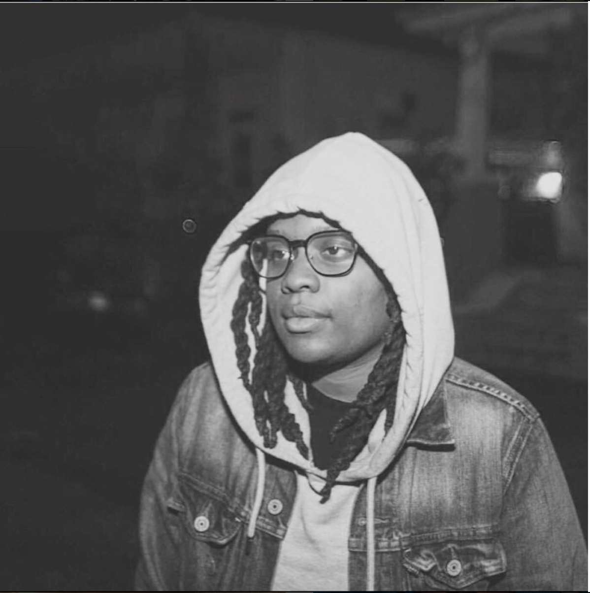

About Me
Welcome to my basic portfolio page. I started this site to showcase some of my interests, hobbies, past-times or whatever else you may call them. In recent years I have been called a renaissance woman. That is, a person with many talents. I love to learn and I also love to teach others what I have learned. Perhaps you can learn something by checking out my Portfolio Page. If you have an questions be sure to Contact Me.
As I have already mentioned, I love to learn. All of my interests/talents started as a basic curiosity that I needed to learn more about. One thing I started early on was the love of music. While watching a band play at church, I found myself captivated by the drummer. Before this time I had never really watched a band live before. I started studing all types of musicans and music after that and years later would find myself working in the entertainment as a merchandise manager on a tour for an artist.
My most recent interest that is worth talking about is cooking. It wasn't until only a year and a half ago that I started becoming very interested in cooking. I was never the cook in the house. Actually, I was the person who told everyone I can't cook. The dish that made me really start cooking a lot was fried chicken. I would like to think of myself as a sort of friend chicken connoisseur. I started ordering fried at every restaurant that served it. I liked the stuff so much I just had to make it at home. I found all the ingredients and made everything from scratch. It was a long process but well worth it. Now, I enjoy cooking several dishes that I used to only order in restaurants and tinkering with the recipe.
There are many things that I enjoy doing. So many I don't want to talk about all of them right here. Enjoy checking out my portfolio! Also, I look forward to hearing from you!